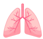
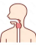
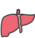

🎗️ World Cancer Day Campaign 🎗️
SPOT early signs of 10 common &
aggressive cancer by blood sample
Breast
Ovary
Colorectum

Pancreas

Lung

Esophagus
Stomach
Endometrium

Liver-Biliary Tract
Head & Neck
The SPOT-MAS test applies Next-Generation Sequencing (NGS) technology to analyze circulating tumor DNA (ctDNA) released into the blood. With just a single blood draw, the test can detect signals of 10 common cancers simultaneously, even when the body has no symptoms. We hope that SPOT-MAS will be a useful tool, providing important initial information for you and your doctor to plan health monitoring and take subsequent diagnostic measures promptly in a timely manner.